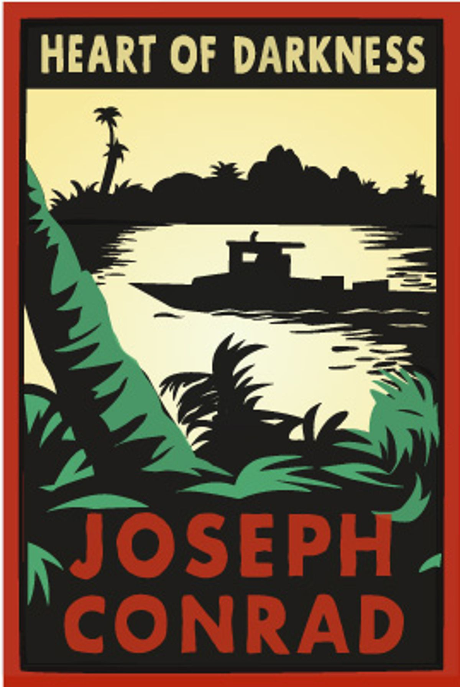

You can find here the most trending books!
- 
Heart Of Darkness.
- Author: Joseph Conrad.
- Description: The story tells of Charles Marlow, an Englishman who took a foreign assignment from a Belgian trading company as a ferry-boat captain in Africa. It follows Marlow as he recounts from dusk through to late night, to a group of men aboard a ship anchored in the Thames Estuary his Congolese adventure. The passage of time and the darkening sky during the fictitious narrative-within-the-narrative parallel the atmosphere of the story.
- Download
Loss Of Reason.
- Author: Miles A. Maxwell.
- Description: A nuclear bomb is detonated in New York. Banker, wife, mother, Cynthia lives in New York. The military has quarantined the city, its bridges and tunnels destroyed or blocked. Easterly winds have forced the bomb's radiation cloud out over Long Island. But the wind is about to change. Franklin climbs mountains and truly understands people. Everon can fly anything. And Cynthia's brothers are determined to find her. If it were your sister, what would you do?
- Download
The House Of Closed Doors.
- Author: Jane Steen.
- Description: "My stepfather was not particularly fond of me to begin with, and now that he'd found out about the baby, he was foaming at the mouth" Desperate to avoid marriage, Nell Lillington refuses to divulge the name of her child's father and accepts her stepfather's decision that the baby be born at a Poor Farm and discreetly adopted.Until an unused padded cell is opened and two small bodies fall out.
- Download
Black Beauty.
- Author: Anna Sewell.
- Description: The narrator of this book, the handsome, coal-black horse called ''Black Beauty'', is lead through numerous adventures by various owners - from a riding and carriage horse, to the rough life of a town cab horse, to eventual happiness in a secure home, he keeps his strength and good temper. Influential as animal-rights propaganda, this tale is an extremely exciting and moving story.
- Download
The Hound of the Baskervilles.
- Author: Arthur Conan Doyle.
- Description: This may be the most popular of all of the Sherlock Holmes stories. Inspired by regional mythology of the British Isles concerning hell-hounds, the tale tells of detective Sherlock Holmes and his assistant Dr. Watson as they are called to investigate an alleged curse upon the house of the Baskervilles.
- Download